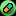

|
Болезни и стимуляторы
Дружба между расами имеет не только положительные стороны, но и отрицательные.
Одна из них - болезни других гуманоидных форм. Болезни могут влиять на навыки, уменьшая или увеличивая их на время болезни. Здесь вы сможете ознакомиться с самыми опасными заболеваниями.
Примечание. Далее изменение навыков отображается как: уменьшение —, увеличение +
 Ослепление Ослепление
Начальная стадия полной потери зрения. Плохое видение целей на радаре и в окружающем
пространстве.
| |
Чекумаш
Наличие в космосе нереальных объектов: бредовых планет, туманностей. Потусторонние
звуки, взывающие к зараженному.
|
|
Святой фанатизм
В космосе все корабли кажутся доминаторами. На планетах вещи выглядят как доминаторские.
Временные приступы бешенства, окружающие теряют уважение к болеющему гуманоиду.
Навык обаяния минимальный. Навыки стрельбы, маневренности и лидерства повышаются.
| |
Комплексный имуноцид
У больного ослаблен иммунитет. В результате он легко заболевает болезнями. Контакт
с представителями любых рас нежелателен.
|
|
Загадочная луатанция
Игрок не может эффективно стрелять, требовать денег или вымогать грузы, навык
отношения к нему максимальный. Время от времени приходит сообщение от фонда поддержки
луатанцев, и больному присылают деньги.
| |
Наркозависимость
У больного появляется зависимость от приема стимуляторов. Трясутся конечности,
увеличивается износ оборудования. Навыки атаки и маневренности минимальные.
| |
Вихревая контузия
Наступает в бою. У больного нарушается сон. В результате он не может концентрироваться,
теряет навыки атаки и маневренности. Торговый навык пропадает напрочь.
| |
Мышечное растяжение
Сильная боль затрудняет движения, мешает концентрироваться и отдавать приказы,
что приводит к потере почти всех навыков.
| |
Великий Малососус
У заболевшего малока резко увеличивается физическая масса, а с ней и вес в обществе.
Изменения так велики, что масса корабля становится заметно больше, а это приводит
к уменьшению скорости. При этом навыки лидерства и торговли возрастают на порядок.
| |
Горькая пеленоша
Распространенное детское пеленгское заболевание, преследующее и часть взрослого
населения. В период болезни больной плохо обращается с оборудованием, что резко
уменьшает срок его эксплуатации.
| |
Ака Сециянка
У больного появляется рассеянность внимания. Он страшно косит в бою и порой теряет
оборудование в космосе. Интересно, что замедление работы мозга положительно сказывается
на навыке торговли фэян.
| |
Новый молизон
На всех планетах строго запрещается торговать медикаментами и едой (это расценивается
как контрабандная операция). Активизируется гормональный обмен, что приводит к
росту навыков стрельбы и маневренности.
| |
Лучевая болезнь
Возникает под воздействием сильного излучения. У заболевшего ухудшается умственная активность, вследствие чего, сильно снижается его обучаемость. Недомогание проходит само собой через месяц-два, в зависимости от полученной дозы облучения. Методы лечения пока не найдены. Возникает при активации Трансфакторного маяка. При повторной активации Трансфакторного маяка, до истечения болезни, негативный эффект усиливается.
|
|
 Слово болезнь всегда воспринимается как нечто плохое. В игре так не всегда может быть. Попутно болезнь приносит как положительную, так и отрицательную сторону. Внимательно посмотрите на изменение своих навыков, взвесьте, выгодно ли для вас в данный момент игры наличие болезни или нет. Если это вам выгодно, то можно не спешить ее вылечить в медицинском центре. Слово болезнь всегда воспринимается как нечто плохое. В игре так не всегда может быть. Попутно болезнь приносит как положительную, так и отрицательную сторону. Внимательно посмотрите на изменение своих навыков, взвесьте, выгодно ли для вас в данный момент игры наличие болезни или нет. Если это вам выгодно, то можно не спешить ее вылечить в медицинском центре.
Принимать стимуляторы рекомендуется только в чрезвычайных ситуациях, т.к. они
вызывают привыкание. На любой медицинской станции вам предложат выбор стимуляторов. От вашего ранга и сложности игры зависит, какое количество стимуляторов вам предложат, а также — какое их количество вы сможете принять. Зеленый новичок имеет право одновременно воспользоваться одним-двумя стимуляторами. А, соответственно, Командор имеет возможность использовать большим количеством стимуляторов одновременно. При покупке одного стимулятора пропадает возможность воспользоваться им вторично до прекращения срока действия. Срок действия всех стимуляторов зависит от сложности игры.
Примечание. В бизнес-центре можно купить себе Медицинский полис. На время его действия медицинские центры предоставляют скидку на все свои услуги.
|
 Малокская сижа
Жидкий стимулятор. Использовать не чаще одного раза в год, иначе вызывает привыкание.
Улучшает меткость и маневренность, почти до предела. Недаром про этот стимулятор
говорят: "Редко, но метко".
| |
Одноглазый Хамас
Пеленгский стимулятор. В 3227 году адаптирован для использования другими расами.
Выглядит как маленькое существо с единственным глазом. Это существо присасывается
к гуманоиду, пускает корни в его мозг и дает ему силу воздействия гипнозом. Все
корабли, с кого бы пилот ни попросил дань в виде товара, отдадут ее безоговорочно.
Стимулятор плохо влияет на репутацию, снижает навыки лидерства и обаяния.
| |
Звездная пыль
Стимулятор в виде микропорошка из частиц, которые находят рядом с черными дырами.
Принимать внутрь. На длительное время улучшает функции мозга любой расы. Повышается
целый ряд навыков.
| |
Супер техник
Фэянский биостимулятор, развивает технические навыки. Практически перестает изнашиваться
оборудование. Действие крайне ограничено.
| |
Гаалистра времени
Гаальский боевой стимулятор. Рекомендуется использовать во время сражений. Кратковременно
заставляет мозг работать в несколько тысяч раз быстрее. Скорость корабля и точность
стрельбы резко увеличивается.
| |
Кровяной джогар
Твердый маслянистый сгусток из малокского песочного джогара. Стимулятор улучшает
кровоснабжение, заменяя кровяные тельца своими - более мощными искусственными
заменителями. Делает организм менее восприимчивым к болезням.
|
|
Рагобамский шепот
Стимулятор сделан из настоя на вонючей болотной жиже, с применением радиоактивной
выжимки яда рагобамских жаб. Повышает мастерство уговоров и объяснений, отношение
к пилоту улучшается. Можно есть рагобамских жаб.
| |
Ведущий Шахманду
Воздействие этого пеленгского препарата дает на некоторое время сильную веру в
себя - бесценное качество, позволяющее сплотить вокруг себя толпы соратников!
Препарат улучшает навыки лидерства и позволяет заключать партнерские контракты
на длительный срок.
| |
Психотропный кэш
Мозг под воздействием стимулятора посылает импульсы радару и сканеру, невероятно
увеличивая их мощь. Человек-сканер вызывает раздражение у окружающих, что приводит
к негативной оценке любых действий последнего.
| |
Торговая маркировка
Временная торговая подкожная маркировка. Является свидетельством большого опыта
в деле совершения торговых операций. Оборудование благодаря этому продается за
полную стоимость.
| |
Дубльплекс
Краткоживущий вирус, искусственно выведенный на Земле в 2117 году, в рамках экспериментов
с теорией вероятности. Ходят упорные слухи, что зараженному этим вирусом всегда
сопутствует удача во всех его делах, хотя это так и не было доказано. В качестве
побочного эффекта вирус вызывает легкую слабость, из-за чего снижаются навыки
атаки и маневренности. Зато носителю вируса гарантируется высокое вознаграждение
за выполнение правительственных заданий, поскольку суеверные гуманоиды найдутся
на любой планете.
| |
Абсолютный статус
Виден исключительно при био-сканировании в правительственных учреждениях. К владельцам
предъявляются особые, минимальные требования. А именно - более мягкие в смысле
сроков при выдаче правительственных заданий.
| |
Использование стимуляторов, например, может помочь на начальном этапе игры заработать больше денег, сэкономить на ремонте или увеличить поражающую силу оружия. Использование стимулятора "Кровяной Джогар" позволяет существенно снизить шанс заразиться различными болезнями.
|